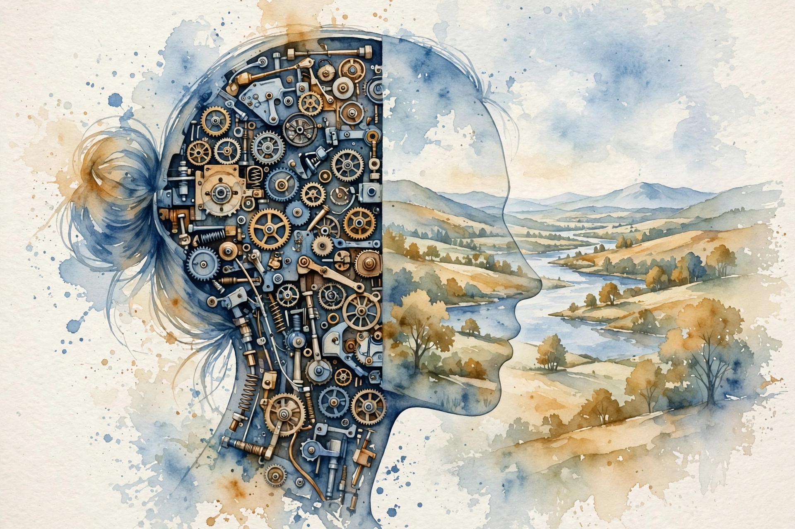
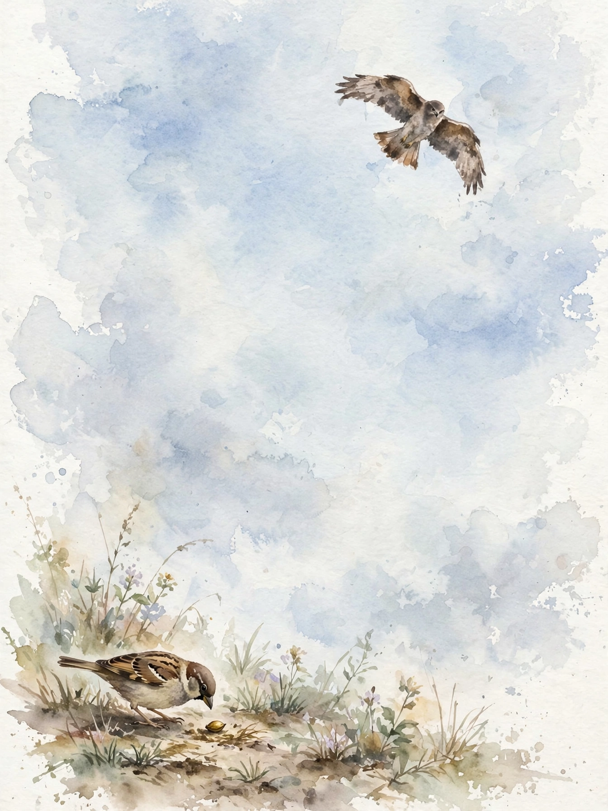

Interactive companion
The Divided Brain

The vortex
Type left brain versus right brain into YouTube and you fall into a vortex of wild claims. Creative people are right-brained, analytical people are left-brained. For decades pop psychology carved the brain into two neat boxes, and the idea grew so crude that serious scientists walked away from the whole field.
Source fact One psychiatrist decided to study the divided brain anyway. Colleagues warned him the topic was toxic and told him not to go near it. He went anyway. His name is Iain McGilchrist, and his book on the subject is The Master and His Emissary.
What he found looks nothing like the YouTube version. The two halves of the brain do not do different things. They do the same things, but in different ways. That distinction carries large consequences for how we learn, how we judge right from wrong, and how we see reality itself.
Why the brain is split
Start with the oldest question. If the brain were a simple processing machine, why split it in half? The division is ancient. It shows up in mammals, reptiles, fish, insects, even in nematode worms whose brains hold just 302 neurons and still work asymmetrically.
One of the oldest creatures with a neural network, a tiny organism called Nematostella vectensis, lived about 600 million years ago. Its network was asymmetrical. Whatever the division does, evolution has bet on it since long before dinosaurs walked the earth.
McGilchrist explains the bet with a bird. A bird picking up a seed needs two kinds of attention at once: narrow, precise focus to grab the seed, and broad, sustained vigilance to spot the predator. Narrow alone means the bird eats the seed and gets eaten. Wide alone means it sees danger coming and starves.
Nugget 1 · Two attentions
The seed and the hawk
What happened. McGilchrist traces the divided brain to a survival problem: a bird must watch the seed and the predator at the same time, with two incompatible kinds of attention.
Why it matters. The split is not a design flaw. It is the solution to the problem of two views of reality at once.
The principle. When two demands conflict, do not pick one. Build a system that holds both.
Source: episode transcript, 00:01:46. Source fact
How, not what
Here the pop version collapses. Both hemispheres take part in everything. The difference is how they approach it. McGilchrist argues the old error came from treating the brain like a machine, assigning each part a function. Ask instead how a person does a thing, and the hemispheres reveal themselves: each does all things in a totally different way, with a different spirit, toward a different end.
Music makes the partnership concrete. The right hemisphere takes in the piece as a whole. The left unpacks it, and you practice the fingering at bar 18, and you learn where the harmony moves. Then, to perform, you must put the analysis out of your mind. The whole comes first, then the parts, then back to the whole, which only the right hemisphere can hold.

The gatekeeper
For this collaboration to work, the hemispheres must connect and stay separate. The bundle of fibers that links them, the corpus callosum, is usually described as a bridge passing information freely. McGilchrist calls it a gatekeeper, and believes its main job is separation.
His analogy: a surgeon and a scrub nurse collaborate precisely because they do not do the same job. Without the boundary, the two views of reality would blur into one, and the advantage of holding two perspectives would vanish.
Nugget 2 · The gatekeeper
Separation is what makes teamwork work
What happened. McGilchrist reframes the corpus callosum as a gatekeeper whose main work is to keep the two hemispheres distinct, not just linking them.
Why it matters. Two perspectives help only while they stay two. Merge them and the advantage disappears.
The principle. In any partnership, protect the difference between the partners. Sameness is not synergy.
Source: episode transcript, 00:05:44. Source fact
The split-brain window
In 1997 PBS aired a documentary about a patient named Joe. He had severe epilepsy, and his doctors tried a radical treatment: a surgeon sliced his corpus callosum, literally splitting his brain in two. The surgery stopped the seizures and gave researchers a rare window into each hemisphere on its own.
How old is the divided brain
Three landmarks from the episode
Source: episode transcript, 00:01:58 and 00:06:23. Source fact
Tone, humor, and morals
The differences run deeper than attention. Both hemispheres process language, but the right tracks tone, implication, and what is not said, while the left sticks to the literal words. Say the room is a bit hot, and the right hemisphere hears a request to open a window. The left wonders why you offer weather news. Humor needs the same double vision, which is why right-hemisphere damage can rob people of the sense of what is funny.
Moral reasoning splits the same way. Picture two scenes. A woman puts what she thinks is sugar in a friend cup, but it is poison, and the friend dies. Another woman puts what she thinks is poison in the coffee of someone she hates, but it is sugar, and the person lives. Most of us call the second worse. Intent is what matters.
When researchers temporarily disabled part of the right hemisphere, the right temporal parietal junction, volunteers gave strange, purely utilitarian answers. To the left hemisphere alone, what matters is that in one case someone lies dead on the floor. The fact that it was unintentional needs the bigger picture.
Nugget 3 · The moral experiment
Intent needs the wide view
What happened. With the right hemisphere disrupted, people judged the accidental poisoning worse than the attempted murder, because a death is a death.
Why it matters. Moral judgment is not calculation. It needs context, and context lives in the wide view.
The principle. When a verdict feels obvious, ask which hemisphere casts the vote. Facts alone acquit and condemn badly.
Source: episode transcript, 00:08:40. Source fact
The arm that was not hers
Now the darker turn. The left hemisphere cannot see the big picture, and because it believes what it can see is all there is to see, it does not know that it misses the big picture.
After a left-hemisphere stroke, the right hemisphere still works, and patients know something is wrong. After a right-hemisphere stroke, patients can have no idea anything changed. McGilchrist describes a doctor examining a woman whose arm hung paralyzed. The physician asked about the arm:
“Whose arm is this?”
Physician, in the exchange McGilchrist describes, episode 00:10:37
The patient answered that it was her mother arm, that she found it in her bed, that it felt warmer than her own. Her own arm, attached to her body, and her left hemisphere working alone invented a self-contained story rather than admit the defect.
Interpretation This is confabulation as a feature, not a bug. The left hemisphere does not report the world. It defends a story about the world. When evidence contradicts the story, it rewrites the evidence.
Nugget 4 · The mother arm
The left hemisphere would rather invent than admit
What happened. A stroke patient with right-hemisphere damage denied her paralyzed arm was hers and claimed it belonged to her mother.
Why it matters. The narrow view does not merely miss context. It fabricates a story that hides the miss.
The principle. Distrust the part of your mind that is never confused. Certainty is often confabulation.
Source: episode transcript, 00:10:37. Source fact
The gaps between the notes
McGilchrist offers an analogy for the scientific way of knowing. Drill into music with electron microscopy and you learn that music is made of notes. A note is a simple tone. It means nothing. Put 35,000 meaningless notes together and you get the B minor mass. Where does the meaning come from? It must come from the gaps between the notes, the gaps that make melody and harmony. But the gaps are silence, and silence means nothing either. Many nothings, added up, mean everything.
“The left hemisphere hears the individual notes. Notices the gaps between the notes. The right hemisphere hears Bach.”
Narration, Hidden Brain episode 2
The piece was written more than 200 years ago. The left hemisphere can count its parts forever and never arrive at the glory. The glory lives in the whole.
The master and the emissary
The book title comes from a parable with roots in Nietzsche. A wise master rules the land but cannot be everywhere, so he appoints an emissary, a bright messenger, to carry instructions to the far corners. The emissary is bright, but not bright enough to know what he does not know. He decides he knows everything, dons the master cloak, and the community falls apart.
The master is the right hemisphere: the whole picture, context, meaning. The emissary is the left: details, tasks, breaking problems into pieces. The emissary is essential. Without it nothing gets done. But it cannot see what the master sees, and because it cannot see the big picture, it assumes there is no big picture to see.
Nugget 5 · Master and emissary
The servant who forgot the master
What happened. McGilchrist maps the hemispheres onto the parable: the right hemisphere is the master who sees the whole, the left the emissary who executes the parts.
Why it matters. The danger is not the emissary. It is the emissary believing it is the master.
The principle. Let the detail-worker run the details, but never let it set the direction.
Source: episode transcript. Parable from Nietzsche via McGilchrist. Source fact
The world the emissary built
McGilchrist believes the parable describes modern Western society. Asked what a world run by the left hemisphere alone would look like, he lists: loss of the big picture, emphasis on detail, predictability, categorization, loss of the unique, a need for total control, anger as the keynote of public discourse, and black-and-white thinking that cannot tolerate shades of meaning.
He sees the symptoms around us: predetermined systems of algorithms, social alienation, life divorced from the natural world, insistence on extreme positions. Meaning, he argues, comes from living in a consistent culture with connection to the past, to other people, to the natural world, and to things beyond our ken. Those are right-hemisphere understandings, and their loss in modern life is grievous.
Interpretation He is careful to say this is not an argument against science or reason. He loves science and depends on it. The argument is about balance. The hemispheres need each other. The trouble starts when one forgets the other exists.
The forgotten gift
McGilchrist closes with a line often misattributed to Albert Einstein: the rational mind is a faithful servant, the intuitive mind is a precious gift, and we live in a society that honors the servant and forgets the gift.
The story of the divided brain is not about one half good and the other bad. We need the emissary, its precision, its focus, its power to break things into parts. But the master, the part that sees the whole picture and understands what is not said, now sits pushed aside, and most of us do not even realize it is gone. When the left hemisphere loses something, it does not mourn the loss. It denies there was ever anything there to lose.
Watch the episode
Official Hidden Brain episode video for The Divided Brain.The official Hidden Brain episode video, embedded via youtube-nocookie.com, the only external dependency on this page.
Nugget index
- Nugget 1. The seed and the hawk (Why the brain is split)
- Nugget 2. Separation is what makes teamwork work (The gatekeeper)
- Nugget 3. Intent needs the wide view (Tone, humor, and morals)
- Nugget 4. The left hemisphere would rather invent than admit (The arm that was not hers)
- Nugget 5. The servant who forgot the master (The master and the emissary)